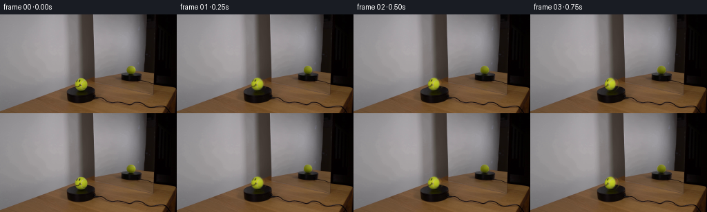
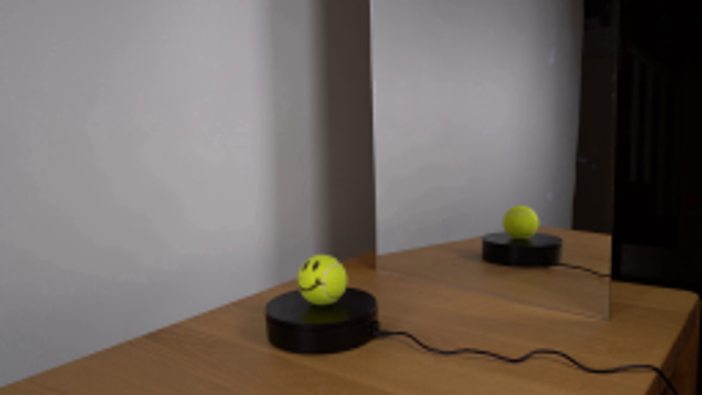
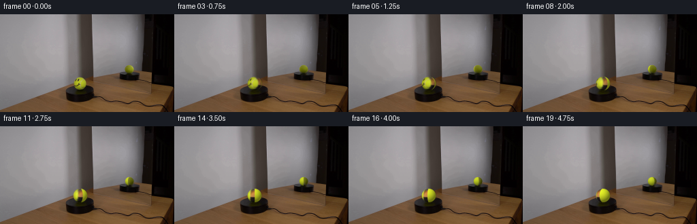
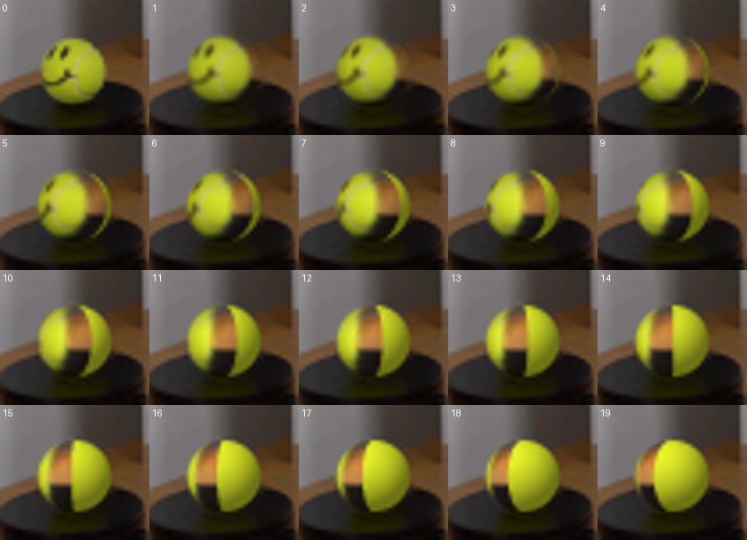
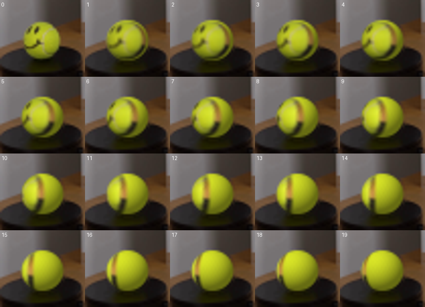

CODING AGENTS AS PIXEL WORLD MODELS
traex/GPT-5.6-Sol · 0119
点击播放 · 原生 RGB 像素
逐轮保存的候选
回放视频、检查图与代码变化。
每份候选均可单独播放。实际图片检查记录在下方工具轨迹中。
候选 01播放与检查图
点击播放 · 原生 RGB 像素


展开代码变化
--- 上一保存版本
+++ 本次保存版本
@@ -0,0 +1,133 @@
+from pathlib import Path
+import numpy as np
+import cv2
+from PIL import Image
+import artifact_io
+
+# Analytic image-space sphere rotation. The photographed ball's visible surface is
+# treated as a texture sample; unknown longitudes are completed with a subtly
+# mottled tennis-felt material.
+ROOT = Path(__file__).resolve().parent
+source = np.asarray(Image.open(ROOT / 'first_frame.png').convert('RGB'), dtype=np.uint8)
+H, W = source.shape[:2]
+
+
+def bilinear(im, x, y):
+ x = np.clip(x, 0, im.shape[1]-1.001)
+ y = np.clip(y, 0, im.shape[0]-1.001)
+ x0 = np.floor(x).astype(np.int32); y0 = np.floor(y).astype(np.int32)
+ x1 = np.minimum(x0+1, im.shape[1]-1); y1 = np.minimum(y0+1, im.shape[0]-1)
+ fx = (x-x0)[...,None]; fy = (y-y0)[...,None]
+ return ((1-fy)*((1-fx)*im[y0,x0] + fx*im[y0,x1]) +
+ fy*((1-fx)*im[y1,x0] + fx*im[y1,x1]))
+
+
+def light(u, v, z, reflected=False):
+ # Fixed room lighting: broad upper-left source plus soft ambient and lower rim darkening.
+ if reflected:
+ lx, ly, lz = -.38, -.62, .68
+ ambient, diffuse = .50, .50
+ else:
+ lx, ly, lz = -.40, -.58, .70
+ ambient, diffuse = .47, .53
+ d = np.maximum(0., u*lx + v*ly + z*lz)
+ return ambient + diffuse*d
+
+
+def make_background(cx, cy, rx, ry):
+ yy, xx = np.mgrid[0:H,0:W]
+ # Slightly generous elliptical mask removes the photographed sphere but keeps its contact shadow.
+ mask = ((((xx-cx)/(rx+1.25))**2 + ((yy-cy)/(ry+1.15))**2) <= 1).astype(np.uint8)*255
+ # TELEA reconstructs wall/table/platform from their immediate continuations.
+ bgr = cv2.cvtColor(source, cv2.COLOR_RGB2BGR)
+ out = cv2.inpaint(bgr, mask, 3.0, cv2.INPAINT_TELEA)
+ return cv2.cvtColor(out, cv2.COLOR_BGR2RGB)
+
+
+def sphere_layer(original, cx, cy, rx, ry, angle, reflected=False):
+ # Work in a small high-resolution local grid, then area-downsample for natural antialiasing.
+ S = 4
+ pad = 2
+ x0 = max(0, int(np.floor(cx-rx-pad))); x1 = min(W, int(np.ceil(cx+rx+pad))+1)
+ y0 = max(0, int(np.floor(cy-ry-pad))); y1 = min(H, int(np.ceil(cy+ry+pad))+1)
+ xs = x0 + (np.arange((x1-x0)*S)+.5)/S
+ ys = y0 + (np.arange((y1-y0)*S)+.5)/S
+ X,Y = np.meshgrid(xs,ys)
+ u=(X-cx)/rx; v=(Y-cy)/ry
+ rr=u*u+v*v
+ inside=rr<1
+ z=np.sqrt(np.maximum(0,1-rr))
+ lon=np.arctan2(u,z)
+ lat=np.arcsin(np.clip(v,-1,1))
+ # Clockwise rotation as seen from above moves the front smile smoothly to image-left.
+ slon=lon+angle
+ vis=np.abs(slon)<=np.pi/2
+ us=np.cos(lat)*np.sin(slon)
+ vs=np.sin(lat)
+ sx=cx+rx*us; sy=cy+ry*vs
+ sampled=bilinear(original.astype(np.float32),sx,sy)
+ ls=light(us,vs,np.sqrt(np.maximum(0,1-us*us-vs*vs)),reflected)
+ lt=light(u,v,z,reflected)
+ sampled *= (lt/np.maximum(ls,.3))[...,None]
+
+ # Unseen felt: stable fine mottling in spherical coordinates, with no face on the back side.
+ # The coordinate-based fibers rotate with the ball rather than sparkling frame-to-frame.
+ noise=(np.sin(slon*31 + lat*17)+np.sin(slon*53-lat*29)+np.sin(slon*89+lat*47))/3
+ if reflected:
+ albedo=np.empty((*u.shape,3),np.float32)
+ albedo[...,0]=166+4*noise; albedo[...,1]=177+5*noise; albedo[...,2]=32+2*noise
+ else:
+ albedo=np.empty((*u.shape,3),np.float32)
+ albedo[...,0]=192+5*noise; albedo[...,1]=202+6*noise; albedo[...,2]=34+2*noise
+ fill=albedo*(lt/.82)[...,None]
+ rgb=np.where(vis[...,None],sampled,fill)
+ rgb=np.clip(rgb,0,255)
+
+ # Sub-pixel silhouette. A tiny dark contact tint at the very bottom anchors the sphere.
+ edge=np.clip((1-rr)*S*min(rx,ry)*.55,0,1)
+ edge *= inside
+ contact=np.clip((v-.82)/.18,0,1)[...,None]
+ rgb *= (1-.10*contact)
+ # premultiply and area reduce
+ a=edge.astype(np.float32)
+ ph,pw=a.shape
+ rgbp=rgb*a[...,None]
+ a2=a.reshape(ph//S,S,pw//S,S).mean((1,3))
+ c2=rgbp.reshape(ph//S,S,pw//S,S,3).mean((1,3))
+ c2/=np.maximum(a2[...,None],1e-6)
+ return (x0,y0,x1,y1,c2,a2)
+
+
+def composite(frame, layer):
+ x0,y0,x1,y1,c,a=layer
+ reg=frame[y0:y1,x0:x1].astype(np.float32)
+ reg=reg*(1-a[...,None])+c*a[...,None]
+ frame[y0:y1,x0:x1]=np.clip(reg+.5,0,255).astype(np.uint8)
+
+# Main photographed sphere and its dim, smaller mirror image.
+main_bg=make_background(118.0,102.0,10.45,10.15)
+# Restrict reflection replacement tightly enough to preserve black platform silhouette.
+refl_bg=make_background(190.2,81.15,6.45,6.45)
+# Combine both independently reconstructed regions using masks: start with main ball removed,
+# then copy only the reflected-ball neighborhood from its reconstruction.
+base=main_bg.copy()
+y,x=np.mgrid[0:H,0:W]
+rm=(((x-190.2)/7.55)**2+((y-81.15)/7.55)**2)<=1
+base[rm]=refl_bg[rm]
+
+frames=[]
+for i in range(20):
+ if i==0:
+ frames.append(source.copy())
+ continue
+ f=base.copy()
+ # 120 degrees in 4.75 seconds: deliberate, slow scientific-display rotation.
+ theta=np.deg2rad(120.0*i/19.0)
+ composite(f,sphere_layer(source,190.2,81.15,6.45,6.45,-theta,True))
+ composite(f,sphere_layer(source,118.0,102.0,10.45,10.15,theta,False))
+ frames.append(f)
+
+frames=np.stack(frames).astype(np.uint8)
+assert frames.shape==(20,144,256,3)
+assert np.array_equal(frames[0],source)
+artifact_io.save(frames,ROOT)
候选 02播放与检查图
点击播放 · 原生 RGB 像素

展开代码变化
--- 上一保存版本
+++ 本次保存版本
@@ -75,12 +75,17 @@
noise=(np.sin(slon*31 + lat*17)+np.sin(slon*53-lat*29)+np.sin(slon*89+lat*47))/3
if reflected:
albedo=np.empty((*u.shape,3),np.float32)
- albedo[...,0]=166+4*noise; albedo[...,1]=177+5*noise; albedo[...,2]=32+2*noise
+ albedo[...,0]=160+4*noise; albedo[...,1]=171+5*noise; albedo[...,2]=31+2*noise
else:
albedo=np.empty((*u.shape,3),np.float32)
- albedo[...,0]=192+5*noise; albedo[...,1]=202+6*noise; albedo[...,2]=34+2*noise
+ albedo[...,0]=178+5*noise; albedo[...,1]=188+6*noise; albedo[...,2]=32+2*noise
fill=albedo*(lt/.82)[...,None]
- rgb=np.where(vis[...,None],sampled,fill)
+ # The last sliver at the photographed limb contains mostly the table behind
+ # the ball and cannot be stretched into a texture. Feather from the genuine
+ # photographed face to procedural felt before that foreshortened sliver.
+ zsrc=np.sqrt(np.maximum(0,1-us*us-vs*vs))
+ genuine=np.clip((zsrc-.27)/.22,0,1)*vis
+ rgb=sampled*genuine[...,None]+fill*(1-genuine[...,None])
rgb=np.clip(rgb,0,255)
# Sub-pixel silhouette. A tiny dark contact tint at the very bottom anchors the sphere.
候选 03播放与检查图
可观测工具轨迹
实际执行的命令与返回图片。
命令 1exit 0
/bin/bash -lc 'cat GENERATION_RULES.md'
命令 2exit 0
/bin/bash -lc "cat prompt.txt && printf '\\n---FILES---\\n' && find . -maxdepth 2 -type f -printf '%p %s bytes\\n' | sort"
命令 3exit 0
/bin/bash -lc "python - <<'PY'
from PIL import Image
im=Image.open('first_frame.png')
print(im.size, im.mode)
PY
ffmpeg -version | head -3
python - <<'PY'
mods=['cv2','numpy','PIL','imageio','scipy']
for m in mods:
try:
x=__import__(m); print(m,'OK',getattr(x,'__version__',''))
except Exception as e: print(m,'NO',e)
PY"命令 4exit 0
/bin/bash -lc "sed -n '1,240p' artifact_io.py"
命令 5exit 0
/bin/bash -lc "python - <<'PY'
from PIL import Image
im=Image.open('first_frame.png')
im.crop((95,82,138,122)).resize((430,400)).save('.tmp/ball.png')
im.crop((172,66,207,101)).resize((420,420)).save('.tmp/refl.png')
im.resize((768,432)).save('.tmp/full.png')
PY"命令 6exit 0
/bin/bash -lc "python - <<'PY'
import cv2, numpy as np
im=cv2.imread('first_frame.png')[:,:,::-1]
for y in range(92,113):
print(y,[(x,tuple(im[y,x])) for x in range(106,130) if im[y,x,1]>im[y,x,2]*1.35 and im[y,x,1]>80])
PY"命令 7exit 0
/bin/bash -lc "cat > generate.py <<'PY'
from pathlib import Path
import numpy as np
import cv2
from PIL import Image
import artifact_io
# Analytic image-space sphere rotation. The photographed ball's visible surface is
# treated as a texture sample; unknown longitudes are completed with a subtly
# mottled tennis-felt material.
ROOT = Path(__file__).resolve().parent
source = np.asarray(Image.open(ROOT / 'first_frame.png').convert('RGB'), dtype=np.uint8)
H, W = source.shape[:2]
def bilinear(im, x, y):
x = np.clip(x, 0, im.shape[1]-1.001)
y = np.clip(y, 0, im.shape[0]-1.001)
x0 = np.floor(x).astype(np.int32); y0 = np.floor(y).astype(np.int32)
x1 = np.minimum(x0+1, im.shape[1]-1); y1 = np.minimum(y0+1, im.shape[0]-1)
fx = (x-x0)[...,None]; fy = (y-y0)[...,None]
return ((1-fy)*((1-fx)*im[y0,x0] + fx*im[y0,x1]) +
fy*((1-fx)*im[y1,x0] + fx*im[y1,x1]))
def light(u, v, z, reflected=False):
# Fixed room lighting: broad upper-left source plus soft ambient and lower rim darkening.
if reflected:
lx, ly, lz = -.38, -.62, .68
ambient, diffuse = .50, .50
else:
lx, ly, lz = -.40, -.58, .70
ambient, diffuse = .47, .53
d = np.maximum(0., u*lx + v*ly + z*lz)
return ambient + diffuse*d
def make_background(cx, cy, rx, ry):
yy, xx = np.mgrid[0:H,0:W]
# Slightly generous elliptical mask removes the photographed sphere but keeps its contact shadow.
mask = ((((xx-cx)/(rx+1.25))**2 + ((yy-cy)/(ry+1.15))**2) <= 1).astype(np.uint8)*255
# TELEA reconstructs wall/table/platform from their immediate continuations.
bgr = cv2.cvtColor(source, cv2.COLOR_RGB2BGR)
out = cv2.inpaint(bgr, mask, 3.0, cv2.INPAINT_TELEA)
return cv2.cvtColor(out, cv2.COLOR_BGR2RGB)
def sphere_layer(original, cx, cy, rx, ry, angle, reflected=False):
# Work in a small high-resolution local grid, then area-downsample for natural antialiasing.
S = 4
pad = 2
x0 = max(0, int(np.floor(cx-rx-pad))); x1 = min(W, int(np.ceil(cx+rx+pad))+1)
y0 = max(0, int(np.floor(cy-ry-pad))); y1 = min(H, int(np.ceil(cy+ry+pad))+1)
xs = x0 + (np.arange((x1-x0)*S)+.5)/S
ys = y0 + (np.arange((y1-y0)*S)+.5)/S
X,Y = np.meshgrid(xs,ys)
u=(X-cx)/rx; v=(Y-cy)/ry
rr=u*u+v*v
inside=rr<1
z=np.sqrt(np.maximum(0,1-rr))
lon=np.arctan2(u,z)
lat=np.arcsin(np.clip(v,-1,1))
# Clockwise rotation as seen from above moves the front smile smoothly to image-left.
slon=lon+angle
vis=np.abs(slon)<=np.pi/2
us=np.cos(lat)*np.sin(slon)
vs=np.sin(lat)
sx=cx+rx*us; sy=cy+ry*vs
sampled=bilinear(original.astype(np.float32),sx,sy)
ls=light(us,vs,np.sqrt(np.maximum(0,1-us*us-vs*vs)),reflected)
lt=light(u,v,z,reflected)
sampled *= (lt/np.maximum(ls,.3))[...,None]
# Unseen felt: stable fine mottling in spherical coordinates, with no face on the back side.
# The coordinate-based fibers rotate with the ball rather than sparkling frame-to-frame.
noise=(np.sin(slon*31 + lat*17)+np.sin(slon*53-lat*29)+np.sin(slon*89+lat*47))/3
if reflected:
albedo=np.empty((*u.shape,3),np.float32)
albedo[...,0]=166+4*noise; albedo[...,1]=177+5*noise; albedo[...,2]=32+2*noise
else:
albedo=np.empty((*u.shape,3),np.float32)
albedo[...,0]=192+5*noise; albedo[...,1]=202+6*noise; albedo[...,2]=34+2*noise
fill=albedo*(lt/.82)[...,None]
rgb=np.where(vis[...,None],sampled,fill)
rgb=np.clip(rgb,0,255)
# Sub-pixel silhouette. A tiny dark contact tint at the very bottom anchors the sphere.
edge=np.clip((1-rr)*S*min(rx,ry)*.55,0,1)
edge *= inside
contact=np.clip((v-.82)/.18,0,1)[...,None]
rgb *= (1-.10*contact)
# premultiply and area reduce
a=edge.astype(np.float32)
ph,pw=a.shape
rgbp=rgb*a[...,None]
a2=a.reshape(ph//S,S,pw//S,S).mean((1,3))
c2=rgbp.reshape(ph//S,S,pw//S,S,3).mean((1,3))
c2/=np.maximum(a2[...,None],1e-6)
return (x0,y0,x1,y1,c2,a2)
def composite(frame, layer):
x0,y0,x1,y1,c,a=layer
reg=frame[y0:y1,x0:x1].astype(np.float32)
reg=reg*(1-a[...,None])+c*a[...,None]
frame[y0:y1,x0:x1]=np.clip(reg+.5,0,255).astype(np.uint8)
# Main photographed sphere and its dim, smaller mirror image.
main_bg=make_background(118.0,102.0,10.45,10.15)
# Restrict reflection replacement tightly enough to preserve black platform silhouette.
refl_bg=make_background(190.2,81.15,6.45,6.45)
# Combine both independently reconstructed regions using masks: start with main ball removed,
# then copy only the reflected-ball neighborhood from its reconstruction.
base=main_bg.copy()
y,x=np.mgrid[0:H,0:W]
rm=(((x-190.2)/7.55)**2+((y-81.15)/7.55)**2)<=1
base[rm]=refl_bg[rm]
frames=[]
for i in range(20):
if i==0:
frames.append(source.copy())
continue
f=base.copy()
# 120 degrees in 4.75 seconds: deliberate, slow scientific-display rotation.
theta=np.deg2rad(120.0*i/19.0)
composite(f,sphere_layer(source,190.2,81.15,6.45,6.45,-theta,True))
composite(f,sphere_layer(source,118.0,102.0,10.45,10.15,theta,False))
frames.append(f)
frames=np.stack(frames).astype(np.uint8)
assert frames.shape==(20,144,256,3)
assert np.array_equal(frames[0],source)
artifact_io.save(frames,ROOT)
PY
python generate.py
python - <<'PY'
from PIL import Image
import numpy as np
im=Image.open('inspection.png'); print(im.size)
a=np.array(Image.open('first_frame.png')); b=np.array(Image.open('frames/00.png')); print('frame0 equal',np.array_equal(a,b))
PY"命令 8exit 0
/bin/bash -lc "python - <<'PY'
from PIL import Image,ImageDraw
ids=[0,1,2,3,4,5,6,7,8,9,10,11,12,13,14,15,16,17,18,19]
out=Image.new('RGB',(5*168,4*152),(20,20,20))
d=ImageDraw.Draw(out)
for j,i in enumerate(ids):
im=Image.open(f'frames/{i:02d}.png').crop((97,82,139,120)).resize((168,152))
x=(j%5)*168;y=(j//5)*152
out.paste(im,(x,y));d.text((x+3,y+3),str(i),fill='white')
out.save('.tmp/ballseq.png')
PY"命令 9exit 0
/bin/bash -lc "python generate.py
python - <<'PY'
from PIL import Image,ImageDraw
out=Image.new('RGB',(5*168,4*152),(20,20,20));d=ImageDraw.Draw(out)
for i in range(20):
im=Image.open(f'frames/{i:02d}.png').crop((97,82,139,120)).resize((168,152))
x=(i%5)*168;y=(i//5)*152;out.paste(im,(x,y));d.text((x+3,y+3),str(i),fill='white')
out.save('.tmp/ballseq2.png')
PY"命令 10exit 0
/bin/bash -lc "python - <<'PY'
import numpy as np
from PIL import Image
z=np.load('pixels.npz')['pixels']
ims=np.stack([np.asarray(Image.open(f'frames/{i:02d}.png')) for i in range(20)])
print('frames',ims.shape,ims.dtype,'pixels',z.shape,z.dtype)
print('frame00_exact',np.array_equal(ims[0],np.asarray(Image.open('first_frame.png'))))
print('changed pixels per transition', [int(np.any(ims[i]"'!=ims[i-1],axis=2).sum()) for i in range(1,20)])
PY
ls -lh generate.py pixels.npz index.html inspection.png frames/00.png frames/19.png'视觉工具实际返回图片 1
视觉工具实际返回图片 2
视觉工具实际返回图片 3

视觉工具实际返回图片 4

视觉工具实际返回图片 5

视觉工具实际返回图片 6

视觉工具实际返回图片 7

保存候选 3 份；完成命令 10 次；可验证图片返回 7 张。原始 API 响应与完整日志保留在本地。